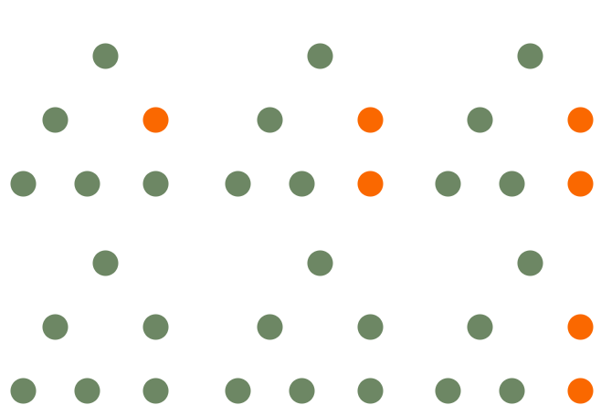

| Module | Cours | TD | |
|---|---|---|---|
| 01 | Introduction | 1h | 1h |
| 02 | Les Bindings et les interactions utilisateur | 1h | 1h |
| 03 | Les composants | 1h | 1h |
| 04 | Mise à l’échelle | 1h | 1h |
| 05 | La navigation et les tests | 1h | 1h |
| Total | 5h | 5h |
Un langage de programmation principalement pour le navigateur
Mais ça, vous le savez déjà !
;)
Un ensemble de fonctions d’un domaine fonctionnel particulier
pour gagner du temps et éviter de “réinventer la roue”

Un cadre pour développer de manière structurée
(homogénéité, bonnes pratiques…) :
Le code de votre application appelle les fonctions d’une librairie
Le code de votre application est appelé par le framework

1 seule page Web est chargée dans le navigateur
dynamiquement réécrite en fonction des interactions utilisateur
Logiciels dont la licence permet :
La libre redistribution
L’accès au code source
La création de travaux dérivés (fork)
Ca se prononce “View”
;)
Un projet JavaScript Open-Source
qui peut être utilisé
comme une simple librarie ou un framework complet
pour construire des Applications Web Monopages
Créé en 2014 par Evan You
Après avoir utilisé Angular.js chez Google
“What if I could just extract the part that I really like about Angular and build something really lightweight…”
React.js Vue.js SvelteNEW! Angular

Architecture qui permet de séparer
La vue (interface Graphique)
Du modèle (les données et leur manipulation : DB, API…)
Le “ViewModel” assure la glue entre les 2 via du “data-binding”
Permet de diviser l’Interface Graphique
en éléments indépendants et réutilisables
Permet de concevoir chaque élément de manière isolée

Avec le data-binding, chaque changement d’état
provoque une cascade d’appels à l’API du DOM
document.getElementsByClassName("list__item")[0].textContent = "List item one";
const listItemTwo = document.createElement("li");
listItemTwo.classList.add("list__item");
listItemTwo.textContent = "List item two";
document.getElementsByClassName("list")[0].appendChild(listItemTwo);
Ces appels sont couteux et beaucoup d’entre eux sont inutiles
Une copie en mémoire du véritable DOM
Lors des changements d’état, seul le DOM virtuel est muté
La différence entre les 2 DOMs est calculée et appliquée en 1 fois au véritable DOM
<!DOCTYPE html>
<html>
<head>
<!-- Dev version -->
<script src="https://cdn.jsdelivr.net/npm/vue/dist/vue.js"></script>
<!-- Or optimized prod version -->
<script src="https://cdn.jsdelivr.net/npm/vue"></script>
</head>
<body></body>
</html>
<!DOCTYPE html>
<html>
<head>
<script>
const app = new Vue({
// Selecteur CSS indiquant l'élément auquel attacher l'application
el: '#myFirstVueApp'
});
</script>
</head>
<body>
<h2>Ma 1ère app vue.js</h2>
<div id="myFirstVueApp"></div>
</body>
</html>
<!DOCTYPE html>
<html>
<head>
<script>
const app = new Vue({
el: '#myFirstVueApp',
data: {
message: 'Hello world!',
}
});
</script>
</head>
<body>
<h2>Ma 1ère app vue.js</h2>
<div id="myFirstVueApp">
<!--
Vue.js utilise un language de template
pour remplacer {{ }} par le contenu au runtime
-->
{{ message }}
</div>
</body>
</html>
Extension navigateur (Chrome, Firefox)
pour faciliter le deboguage

Outil (CLI) qui propose aussi une interface graphique
npm install -g @vue/cli
# Créer une nouvelle appli en ligne de commande
vue create my-awesome-vue-app
# Créer une nouvelle appli via l'interface graphique
vue ui

.vuePermet de transformer des fichiers .vue en code JavaScript interprétable par le navigateur
<!-- Exemple de composant myComponent.vue -->
<!-- Template du composant -->
<template>
<div class="example">{{ msg }}</div>
</template>
<!-- Code JavaScript du composant -->
<script>
export default {
data () {
return {
msg: 'Hello world!'
}
}
}
</script>
<!-- Style du composant -->
<style>
.example {
color: red;
}
</style>
<script>
const app = new Vue({
el: '#myFirstVueApp',
data: {
now: undefined,
},
});
// Met à jour la variable now toutes les secondes
setInterval(() => app.$data.now = new Date().toString(), 1000)
</script>
<div id="app">
<!--
effectue un binding directionnel entre
- l'expression JavaScript
- son rendu dans la page sous forme d'HTML
-->
<span>Il est {{ now }} </span>
</div>
Un attribut HTML compréhensible par Vue.js
Il est préfixé par v-
<!-- Exemples de directives -->
<span v-show="toBeVisible">
<span v-if="toBeVisible">
<span v-bind:title="message">
<script>
const app = new Vue({
el: '#app',
data: {
mySuperTitle: 'Super, non ?',
},
});
</script>
<div id="app">
<!-- A ne pas faire... CA NE MARCHE PAS !! ;) -->
<!-- Il n'est pas possible d'utiliser la syntaxe mustache dans un attribut HTML -->
<span title="{{ mySuperTitle }}">
<!-- Il faut utiliser la directive v-bind:$attribut à la place -->
<span v-bind:title="mySuperTitle">
<!-- v-bind peut être écrit avec la syntaxe abrégée :$attribut -->
<span :title="mySuperTitle">
</div>
<script>
const app = new Vue({
el: '#app',
data: {
isActive: true,
hasError: false,
activeColor: 'red',
fontSize: 30
},
});
</script>
<div id="app">
<!-- Binder la propriété style (inline style) -->
<span :style="{ color: activeColor, fontSize: fontSize + 'px' }"></span>
<!-- Binder des classes CSS -->
<span :class="{ active: isActive, 'text-danger': hasError }"></span>
</div>
<script>
const app = new Vue({
el: '#app',
data: {
seen: true
}
});
</script>
<div id="app">
<!--
v-show "bind" la propriété seen
pour conditionner la visibilité de l'élément
-->
<span v-show="seen">Now you see me</span>
</div>
<script>
const app = new Vue({
el: '#app',
data: {
seen: 'B'
}
});
</script>
<div id="app">
<!-- expression (booleen) pour conditionner la présence de l'élément -->
<span v-if="seen === 'A'">It's an A</span>
<!-- v-else-if peut être chainé -->
<span v-else-if="seen === 'B'">It's a B</span>
<!-- v-else est la négation des v-if / v-else-if qui le précèdent -->
<span v-else>I dont know what it is...</span>
</div>
<script>
const app = new Vue({
el: '#app',
data: {
items: [
{ message: 'Foo', id: 0 },
{ message: 'Bar', id: 1 },
]
}
});
</script>
<div id="app">
<!--
v-for prend pour valeur alias in iterable
un itérable peut être un Array, un Object, un String...)
la directivee key permet d'indiquer ce qui rend l'élément unique
-->
<li v-for="item in items" :key="item.id">
{{ item.message }}
</li>
</div>
<script>
const app = new Vue({
el: '#app',
data: {
rawHtml: '<p style="color: red;">Hello!</p>'
}
});
</script>
<div id="app">
<span v-html="rawHtml"></span>
</div>
Installer Git
Créer un compte sur Github
Communiquer l’adresse email du compte créé
Cloner le dépôt Git de la formation (github.com/fmartinou/training-vuejs)
Ouvrir la présentation training-vuejs/course/index.html
Télécharger et installer Visual Studio Code
Installer les extensions suivantes
Ouvrir le repo Github de la formation dans Visual Studio Code
Télécharger et installer Google Chrome
Installer l’extension Vue.js devtools et la configurer :
Autoriser l'accès aux URL de fichier”
Ouvrir le fichier lab/01/04/index.html dans le navigateur
Créer quelque “todos”
Ouvrir l’extension Vue.js Devtools
Modifier les “todos” dans la console (sous data)
Et observer le binding fonctionner
Ouvrir le fichier lab/01/05/index.html dans le navigateur
Une liste de films est disponible dans la variable movies
Afficher tous les films sous forme d’une liste à puces
Modifier pour que les films non encore sortis soient affichés en rouge
Modifier pour n’afficher que les films dont la note est supérieure à 2
<script>
const app = new Vue({ // 1 instance de Vue est créé et assignée à la variable app
el: '#app',
// Les données 'bindées' sont dans l'objet data
data: {
myData1: 'a string',
myData2: 'another string',
}
});
// Les données peuvent être accédées directement sur l'instance
console.log(app.myData1); // Output -> 'a string'
// Les données peuvent être modifiées (entraine une mise à jour de l'affichage)
app.myData1 = 'Surprise!';
// Attention : les propriétés ajoutées dynamiquement ne seront pas réactives !
app.noWayImNotReactive = 'Hello!';
app.noWayImNotReactive = 'Hello?';
app.noWayImNotReactive = 'Hello???';
</script>
<div id="app">
<div>{{ myData1 }}</div>
<div>{{ noWayImNotReactive }}</div>
</div>
dataComment faire si je veux afficher le message avec la 1ère lettre en majuscule ?
<script>
const app = new Vue({
el: '#app',
data: {
message: 'hello world!',
},
});
</script>
<div id="app">
<span>{{ message.charAt(0).toUpperCase() + message.slice(1) }}</span>
</div>
Il faut éviter de mettre trop de logique dans les templates !
<script>
const app = new Vue({
el: '#app',
data: { message: 'hello world!' },
// Les propriétés calculées sont dans l'objet computed
computed: {
messageCapitalized: function() {
// this est l'objet app
return this.message.charAt(0).toUpperCase() + message.slice(1);
}
}
});
// Peut être accédée comme une propriété standard mais ne peut pas être modifiée
console.log(app.messageCapitalized); // Output -> 'Hello world!'
app.messageCapitalized = 'Surprise'; // Renvoie une Erreur
// Si message est modifié, l'affichage de messageCapitalized va être mis à jour
app.message = 'Coucou le monde !';
</script>
<div id="app">
<span>{{ messageCapitalized }}</span>
</div>
<script>
const app = new Vue({
el: '#app',
data: { firstName: 'John', lastName: 'Doe' },
computed: { // la propriété est un objet qui contient 2 fonctions get & set
fullName: {
get: function() {
return this.firstName + ' ' + this.lastName;
}
set: function (newValue) {
const names = newValue.split(' ');
this.firstName = names[0];
this.lastName = names[names.length - 1];
}
}
}
});
console.log(app.fullName); // Le getter sera invoqué
app.fullName = 'John McClane'; // Le setter sera invoqué
</script>
<div id="app"><span>{{ fullName }}</span></div>
<script>
const app = new Vue({
el: '#app',
data: { message: 'Hello world!' },
watch: {
// Invoque la fonction à chaque fois que la propriété 'message' change
message: function(oldMessage, newMessage) {
if (oldMessage === newMessage) {
displayMessage('Seriously? Are you kidding?');
}
}
}
});
</script>
<div id="app">
<span>{{ message }}</span>
</div>
<script>
const app = new Vue({
el: '#app',
data: { weird: 'Weird!' },
methods: {
doSomethingWeird: function() {
// this référence l'application app
myWeirdApi.run(this.weird);
},
saveUser: function(user) {
myUserApi.save(user);
}
}
});
</script>
<div id="app"><button @click="doSomethingWeird()">Click me!</button></div>
<script>
const app = new Vue({ el: '#app' });
</script>
<!-- Exemple classique (sans vue) -->
<button onclick="alert('Hello!');">Click me!</button>
<div id="app">
<!--
Exemple avec vue
Syntaxe est v-on:eventName
-->
<button v-on:click="alert('Hello!');">Click me!</button>
</div>
<script>
const app = new Vue({
el: '#app',
methods: {
// Le handler fait partie des methods
// Il prend en paramètre l'événement natif provenant du DOM
callMeOnButtonClick: function(event) {
console.log(event);
}
}
});
</script>
<div id="app">
<!-- il est possible de donner une référence de méthode -->
<button v-on:click="callMeOnButtonClick">Click me!</button>
<!-- il est possible d'exécuter la méthode directement -->
<button v-on:click="callMeOnButtonClick($event)">Click me!</button>
</div>
<script>
const app = new Vue({ el: '#app' });
</script>
<div id="app">
<!-- Syntaxe classique -->
<button v-on:click="alert('Hello!')">Click me!</button>
<!-- Syntaxe courte -->
<button @click="alert('Hello!')">Click me!</button>
</div>
<script>
const app = new Vue({ el: '#app' });
</script>
<div id="app">
<!--
.stop est un modifier
qui appelle event.stopPropagation() sur l'événement natif
-->
<button @click.stop="alert('Hello!')">Click me!</button>
<!--
.prevent est un modifier
qui appelle event.preventDefault() sur l'événement natif
-->
<button @click.prevent="alert('Hello!')">Click me!</button>
<!--
.once est un modifier
l'événement sera déclenché (au plus) 1 fois
-->
<button @click.once="alert('Hello!')">Click me!</button>
</div>
<script>
const app = new Vue({ el: '#app' });
</script>
<div id="app">
<!-- event sur toutes les touches -->
<input v-on:keyup="submit">
<!-- event sur touche PageDown -->
<input v-on:keyup.page-down="submit">
<!-- event sur combinaison de touches Alt + C -->
<input v-on:keyup.alt.67="submit">
<!-- event sur combinaison Ctrl + Click -->
<input v-on:click.ctrl="submit">
</div>
Vue fournit des alias pour les codes touches communs
enter tab delete esc space up down left right
<script>
const app = new Vue({ el: '#app' });
</script>
<div id="app">
<!-- event sur tous les clics -->
<button v-on:click="submit">Click me!</button>
<!-- event sur clic gauche -->
<button v-on:click.left="submit">Click me!</button>
<!-- event sur clic droit -->
<button v-on:click.right="submit">Click me!</button>
<!-- event sur clic du milieu -->
<button v-on:click.middle="submit">Click me!</button>
</div>
<script>
const app = new Vue({
el: '#app',
data: {
myValue: 'Hello!',
},
methods: {
updateMyValue: function(event) {
this.message = event.target.value;
}
}
});
</script>
<div id="app">
<!--
Binding data.myValue -> input.value
Event input.change -> updateMyValue
-->
<input type="text" :value="myValue" @input="updateMyValue">
</div>
<script>
const app = new Vue({
el: '#app',
data: {
myValue: 'Hello!',
},
});
</script>
<div id="app">
<!--
Binding data.myValue -> input.value
Binding input.value -> data.myValue
-->
<input type="text" v-model="myValue">
<!--
v-model fonctionne pour les éléments :
- <input type="text"> (propriété value / événement input)
- <input type="checkbox"> (propriété checked / événement change)
- <textarea> (propriété value / événement input)
- <select> (propriété value / événement change)
-->
</div>
<script>
const app = new Vue({
el: '#app',
data: {
myValue: 'Hello!',
},
});
</script>
<div id="app">
<input type="text" v-model="myValue">
<textarea v-model="myValue"><textarea>
</div>
<script>
const app = new Vue({
el: '#app',
data: {
myValue: true,
},
});
</script>
<div id="app">
<!-- myValue est un booléen -->
<input type="checkbox" v-model="myValue">
</div>
<script>
const app = new Vue({
el: '#app',
data: {
myValue: ['A', 'C'],
},
});
</script>
<div id="app">
<!-- myValue est un tableau -->
<input type="checkbox" v-model="myValue" value="A">
<input type="checkbox" v-model="myValue" value="B">
<input type="checkbox" v-model="myValue" value="C">
</div>
<script>
const app = new Vue({
el: '#app',
data: {
myValue: 'B',
},
});
</script>
<div id="app">
<!-- myValue est une String -->
<input type="radio" v-model="myValue" value="A">
<input type="radio" v-model="myValue" value="B">
<input type="radio" v-model="myValue" value="C">
</div>
<script>
const app = new Vue({
el: '#app',
data: {
myValue: 'B',
},
});
</script>
<div id="app">
<!-- myValue est une String -->
<select v-model="myValue">
<option>A</option>
<option>B</option>
<option>C</option>
</select>
</div>
<script>
const app = new Vue({
el: '#app',
data: {
myValues: [
{ code: 'A', display: 'A is awesome' },
{ code: 'B', display: 'B is awesome' },
{ code: 'C', display: 'C is awesome' }
],
myValue: { code: 'A', value: 'A is awesome' },
},
});
</script>
<div id="app">
<select v-model="myValue">
<!--
La propriété display est affichée
La valeur du select est l'object complet
(avec propriétés code & display)
-->
<option v-for="value in values" :value="value">{{ value.display}}</option>
</select>
</div>
<script>
const app = new Vue({
el: '#app',
data: {
myValue: ['A', 'C'],
},
});
</script>
<div id="app">
<!-- myValue est un tableau -->
<select v-model="myValue" multiple>
<option>A</option>
<option>B</option>
<option>C</option>
</select>
</div>
<script>
const app = new Vue({
el: '#app',
data: { myValue: 'hello world!' },
filters: {
capitalize: function (value) {
return value.charAt(0).toUpperCase() + value.slice(1);
},
lol: function (value, extra) {
return `${value} ${extra}!!!`;
},
}
});
</script>
<div id="app">
<!-- Les filtres sont chainés avec des pipes (comme unix) -->
<div>{{ myValue | capitalize | lol }}</div>
<!-- Les filtres sont aussi utilisables dans les directives -->
<input :value="myValue | capitalize | lol('extra')">
</div>
- Catalogue
- Affichage liste de catégories (Policier, SF...)
- Affichage liste de livres en fonction de la catégorie
- Ajout des livres au panier (pas de doublons)
- Panier
- Affichage articles commandés
- Affichage total du panier
- Suppression possible (croix rouge)
- Contact
- Saisie des infos client (nom, prénom...)
- Affichage liste des pays supportés
- Bouton payer
- Accessible si au moins 1 article dans le panier
- Accessible si toutes les infos du contact sont renseignées
- Au clic, le panier et les coordonnées sont vidées
- Une variable globale contient le catalogue (voir data.js)
- categories
- Une variable globale contient les pays (voir data.js)
- countries
- Pour trier des objets par rapport à une prop a -> z (categories...)
- Regarder la fonction String.prototype.localeCompare...
- Pour formatter les prix
- Regarder la fonction Number.prototype.toFixed...
- Pour supprimer un élément d'un tableau
- Regarder la fonction Array.prototype.splice...
- Pour activer /désactiver un bouton
- Regarder la propriété disabled de l'élément HTML button...
Eléments indépendants et réutilisables
// Un composant est un object JavaScript
const myComponent = {
// Attention !
// data est une fonction qui retourne les données à binder
data: function() {
return {
count: 0,
}
},
// un composant peut avoir des methods, computed, watch, filters...
methods: {
add: function() {
this.count++;
}
},
// Définit la template html du composant (sous forme de String)
template: '<button @click="add">Nb clicks = {{ count }}</button>',
};
const myComponent = {
data: function() {
return {
count: 0,
}
},
methods: {
add: function() {
this.count++;
}
},
// template définie dans un littéral de gabarit JavaScript (`toto ${toto}`)
template: `
<div class="toto">
<div class="tutu">
<button @click="add">Nb clicks = {{ count }}</button>
</div>
</div>
`,
};
<!DOCTYPE html>
<html>
<head>
<script>
// Des composants Vue.js
const MyComponent = { ... };
const MyOtherComponent = { ... };
const app = new Vue({
el: '#app',
// Les composants sont enregistrés avec un nom
components: {
'my-component-is-awesome' : MyComponent,
'my-other-component-is-great-too': MyOtherComponent,
}
});
</script>
</head>
<body>
<div id="app">
<my-component-is-awesome></my-component-is-awesome>
<my-other-component-is-great-too></my-other-component-is-great-too>
</div>
</body>
</html>
Les composants Vue.js sont des instances Vue à part entière
Ils possèdent donc leurs propres
data
methods
computed
watchers
<!DOCTYPE html>
<html>
<head>
<script>
const MyComponent = { ... };
const app = new Vue({
el: '#app',
components: {
'foo': MyComponent,
'bar': MyComponent,
}
});
</script>
</head>
<body>
<div id="app">
<!-- Chaque composant a sa propre instance (état...)-->
<foo></foo>
<bar></bar>
</div>
</body>
</html>
Les composants peuvent être imbriqués
<html>
<head>
<script>
const MyNestedComponent = { template: '<p>Nested!!!</p>' };
const MyMainComponent = {
components: {
nested: MyNestedComponent,
},
template: '<p>Main!!!<nested></nested></p>',
};
const app = new Vue({
el: '#app',
components: {
'main': MyMainComponent,
}
});
</script>
</head>
<body>
<div id="app">
<main></main>
</div>
</body>
</html>
<html>
<head>
<script>
const MyGlobalComponent = { template: '<p>Global!!!</p>' };
Vue.component('global', MyGlobalComponent)
const app = new Vue({
el: '#app',
// Les composants globaux n'ont pas besoin d'être enregistrés
components: {}
});
</script>
</head>
<body>
<div id="app">
<global></global>
</div>
</body>
</html>
Les props<html>
<head>
<script>
const MyComponent = {
// Les propriétés attendues en entrée par le composant
props: ['messageToDisplay'],
// Les propriétés sont utilisables dans les templates
template: '<p>{{ messageToDisplay }}</p>'
};
const app = new Vue({
el: '#app',
components: { 'my-component': MyComponent }
});
</script>
</head>
<body>
<div id="app">
<!--
Les propriétés sont valorisées par les attributs HTML
CamelCase -> kebab-case
-->
<my-component message-to-display="Hello World!"></my-component>
</div>
</body>
</html>
<html>
<head>
<script>
const MyComponent = {
props: [message],
template: '...'
};
const app = new Vue({
el: '#app',
components: { 'my-component': MyComponent },
data: {
blablaVar: 'Blabla!',
}
});
</script>
</head>
<body>
<div id="app">
<!-- v-bind peut être utilisé dans les props -->
<my-component v-bind:message="blablaVar"></my-component>
<my-component :message="blablaVar"></my-component>
</div>
</body>
</html>
<html>
<head>
<script>
const MyComponent = {
// Les propriétés peuvent être typées
// (String, Number, Boolean, Array, Object, Date, Function)
props: {
message: String,
amount: Number,
ok: Boolean,
},
};
const app = new Vue({ components: { 'my-component': MyComponent } });
</script>
</head>
<body>
<div id="app">
<!--
v-bind doit être utilisé
pour que Vue invoque une expression JavaScript
et ne passe pas les Strings '42.21' et 'true'
-->
<my-component message="Hello World!" :amount="42.21" :ok="true">
</my-component>
</div>
</body>
</html>
<html>
<head>
<script>
const MyComponent = {
props: {
message: {
type: String, // type
required: true, // obligatoire
validator: function(value) { // fonction de validation
value.length > 20
},
},
amount: {
type: Number,
default: 100, // valeur par défaut
},
},
template: '...'
};
</script>
</head>
</html>
Unidirectionnel !
Les événements<html>
<head>
<script>
const MyComponent = {
template: `
<!-- Emettre un événement sans donnée -->
<button @click="$emit('my-custom-event')">
Click me!
</button>
<!-- Emettre un événement avec 2 données -->
<button @click="$emit('my-custom-event', 'hello', 'world')">
Click me!
</button>
`
};
</script>
</head>
</html>
Il est préconisé d’utiliser la syntaxe kebab-case pour nommer les événements
Rien ne change… on utilise toujours v-on !
<html>
<head>
<script>
const MyComponent = {
template: `
<button @click="$emit('my-custom-event', 'hi', 'you')">
Click me!
</button>`
};
const app = new Vue({
components: { 'my-component': MyComponent },
methods: {
displayMessage: function(a, b) {
console.log(`${a} ${b}!`);
}
}
});
</script>
</head>
<body>
<div id="app">
<my-component v-on:my-custom-event="displayMessage"></my-component>
<my-component @my-custom-event="displayMessage"></my-component>
</div>
</body>
</html>

un composant générique Contact affiche le nom et le prénom
et peut afficher des propriétés “custom”
en fonction de son utilisation
<!-- Dans certains cas, on veut afficher l'adresse-->
<div id="contact1">
<input name="firstName">
<input name="lastName">
<div id="customDetails">
<input name="street">
<input name="zipCode">
<input name="city">
</div>
</div>
<!-- Dans certains cas, on veut afficher le tel/mail-->
<div id="contact1">
<input name="firstName">
<input name="lastName">
<div id="customDetails">
<input name="tel">
<input name="mail">
</div>
</div>
On fait comment ?
<html>
<head>
<script>
const MyComponent = {
template: `
<div id="contact1">
<input name="firstName">
<input name="lastName" >
<div id="customDetails">
<!-- Emplacement prévu pour le slot -->
<slot></slot>
</div>
</div>
`
};
</script>
</head>
</html>
<body>
<div id="app">
<my-component>
<!--
Les children seront créés à la place du <slot></slot>
de la template de my-component
-->
<input name="street" >
<input name="zipCode">
<input name="city" >
</my-component>
</div>
</body>
<html>
<head>
<script>
const MyComponent = {
template: `
<div id="contact1">
<input name="firstName">
<input name="lastName" >
<div id="customDetails">
<!--
Le slot avec une valeur par défaut
(sera écrasé si contenu dans le composant parent)
-->
<slot>
<p>No custom details to display...</p>
</slot>
</div>
</div>
`
};
</script>
</head>
</html>
<html>
<head>
<script>
const MyComponent = {
template: `
<div class="container">
<header>
<slot name="header"></slot>
</header>
<main>
<slot name="main"></slot>
</main>
<footer>
<slot name="footer"></slot>
</footer>
</div>
`
};
</script>
</head>
</html>
<base-layout>
<template v-slot:header>
<h1>Here might be a page title</h1>
</template>
<template v-slot:main>
<p>A paragraph for the main content.</p>
<p>And another one.</p>
</template>
<template v-slot:footer>
<p>Here's some contact info</p>
</template>
</base-layout>

const myComponent = {
data: function() {
return {
...
}
},
// Les hooks sont définis directement dans le composant
beforeMount() {
...
},
mounted() {
...
},
template: '...',
};
- L'application (app.js) contient 3 composants
- catalog
- responsable pour afficher le catalogue
- responsable pour ajouter un article
- cart
- Responsable pour afficher les articles du panier
- Responsable pour supprimer un article du panier
- contact
- Responsable du formulaire de contact
- Passer la donnée 'categories' de app vers le composant catalog (props)
- Vérifier que les listes fonctionnent
- Implémenter la fonction emitAddToCart
- pour émettre un événement 'add-to-cart'
- passer l'article à ajouter dans l'événement
- Modifier dans app pour écouter l'événement et appeler la fonction addToCart
- Vérifier avec la console que l'objet cart se rempli comme prévu
- Passer la donnée 'cart' de app vers le composant cart (props)
- Vérifier que l'ajout / suppression au panier fonctionne
- Passer la donnée 'countries' de app vers le composant contact (props)
- Vérifier que la liste des pays fonctionne
- Implémenter la fonction emitContactChanged
- pour émettre un événement 'contact-changed'
- passer le contact dans l'événement
- Modifier dans app pour écouter l'événement et appeler la fonction onContactChanged
- Vérifier que le bouton Payer fonctionne
const MyComponent = {
template: `
<div id="contact1">
<input name="firstName">
<input name="lastName" >
<div id="customDetails">
<div id="customDetails">
<input name="tel">
<input name="mail">
</div>
</div>
</div>
`
};
const myData = ['a', 'b', 'c'];
function sortMyData = {
// Oups... Uncaught ReferenceError : mydata is not defined
return mydata.sort();
}
// Ne fonctionne pas sur IE <8
// Ne fonctionne pas sur Safari < 4
// Fonctionne partiellement sur certains IE / Firefox / Safari
// ... :(
window.postMessage({
hello: 'world',
});
// varA n'est jamais utilisée et devrait être supprimée
const varA = 'Hi!';
const varB = 'Hello!' // Il manque un point-virgule à la fin de la ligne
function displayMessage() {
return varB.toUpperCase();
}
// Un formatage ni fait ni à faire...
function
mess
{ if
(mess
) {
console
.log(
'dirty');
}
else {
console.log(
'clean'); } }
<!--
Autant de requêtes HTTP que de scripts
Chaque composant est un script composé de bytes inutiles (espaces, tabulations...)
-->
<script src="component1.js"></script>
<script src="component2.js"></script>
<script src="component3.js"></script>
<script src="component4.js"></script>
<script src="component5.js"></script>
<script src="component6.js"></script>
<script src="component7.js"></script>
<script src="component8.js"></script>
<script src="component9.js"></script>
<script src="component10.js"></script>
Des outils existent pour palier ces limitations
Ils sont tous développés en JavaScript
et fonctionnent sur Node.js
Node.js
est un environnement d’exécution JavaScript
en dehors d’un navigateur Web
Il est basé sur le moteur V8

Node.js inclut un gestionnaire de paquets :
Node Package Manager (npm)
# Install express
npm install express
# Install vue-cli
npm install -g @vue/cli
permet de lister les dépendances utilisées par un projet
{
"author": "John Doe",
"license": "MIT",
"name": "my-project",
"description": "A sample Node.js app",
"version": "1.0.0",
"main": "index.js",
"dependencies": {
"express": "^4.17.1"
},
"devDependencies": {
"@vue/cli": "^4.3.1"
}
}
}
# Exécuter npm sur un dossier qui contient un fichier package.json
# Cela va installer toutes les dépendances dans un dossier node_modules/
npm install

Un linter de code JavaScript
Analyse le code de manière statique (pas d’exécution)
pour vérifier l’application de règles de codage
Intégré dans les principaux IDE


Un transpiler : transforme du code Source en… code Source !
Babel permet
de coder avec les dernières fonctionnalités JS (ES2015 et +)
et d’obtenir un code utilisable sur tous les navigateurs souhaités !
// Exemple : un code utilisant une fonction fléchée (ES2015)
[1, 2, 3].map((n) => n + 1);
// L'équivalent après transpilation par Babel (ES5)
[1, 2, 3].map(function(n) {
return n + 1;
});

Un bundler : il assemble et optimise les ressources statiques:

Un loader Webpack
qui permet de transformer
des fichiers .vue en fichiers .js et .css
Un format permettant d’écrire un composant dans un seul fichier
<template>
<div>
<p> {{ greeting }} World!</p>
<other-component></other-component>
</div>
</template>
<script>
import OtherComponent from './OtherComponent.vue'
export default {
components: {
OtherComponent
},
data () {
return {
greeting: 'Hello'
}
}
}
</script>
<style>
p {
font-size: 2em;
}
</style>
Un outil en ligne de commandes
(Command Line Interface)
pour créer un nouveau projet
en répondant à quelques questions
(boilerplate)

# l'option -g permet d'installer le module en global
# Il va être ajouté au PATH de l'utilisateur
# Et sera utilisable depuis n'importe où
npm install -g @vue/cli
vue create hello-world
<!-- exemple de fichier hello.vue -->
<!-- template contient la template html du composant -->
<template>
<div>
<p> {{ greeting }} World!</p>
</div>
</template>
<!-- script contient le code JS du composant -->
<script>
// Tout le code JS est "exporté"
// pour pouvoir être "importé" par d'autres composants
export default {
data () {
return {
greeting: 'Hello';
}
}
}
</script>
<!-- style contient la CSS du composant -->
<style>
p {
font-size: 2em;
}
</style>
<!-- exemple de fichier app.vue souhaitant utiliser le composant hello.vue -->
<template>
<div>
<!-- Utilisation du composant HelloWorld (Attention ! kebab-case !) -->
<hello-world></hello-world>
</div>
</template>
<script>
// Le composant HelloWorld.vue est importé
import HelloWorld from './HelloWorld.vue';
export default {
components: {
// Le composant HelloWorld est référencé en tant que sous-composant
HelloWorld,
},
}
</script>
1. Installer node.js (https://nodejs.org/en/)
2. Tester en exécutant la commande `node -v`
3. Tester la console nodejs
- Exécuter la commande `node`
- Puis dans la console node, exécuter `console.log('Coucou !')`
- Pour quitter appuyer sur `CTRL+D`
1. Vérifier que npm fonctionne
- `npm -v`
2. Installer vue-CLI en global
- `npm install -g @vue/cli`
3. Tester que le CLI fonctionne
- `vue -V`
1. Ouvrir un terminal sous lab/04
2. Créer une nouvelle application "hello" avec vue-CLI
- `vue create hello`
- default (babel,eslint)
- ENTREE
3. Déplacer vous sous le répertoire `lab/04/hello` nouvellement créé et exécuter
- `npm run serve`
4. Ouvrir dans le navigateur l'application Vue créée
- http://localhost:8080
1. Sous lab/04/hello/src/components
- Créer un composant ChuckNorris.vue
- Dans la partie <template>
<div>
<h2>Chuck Norris fact...</h2>
</div>
2. Dans lab/04/hello/src/App.vue
- Importer le composant ChuckNorris.vue
- Référencer le composant en tant que sous-composant de app
- Insérer le composant <chuck-norris /> au dessus du composant <HelloWorld>
3. Vérifier que cela fonctionne
- vue-serve doit afficher `Compiled successfully in ...ms`
- rafraichir le navigateur et vérifier que Chuck Norris s'affiche1. Copier le fichier lab/04/facts.js
- sous lab/04/hello/src/facts.js
2. Copier le fichier lab/04/chuck_norris.jpg
- sous lab/04/hello/src/assets/chuck_norris.jpg
3. Importer les facts dans app.vue
- `import facts from "./facts";`
3. Modifier pour passer les facts au composant ChuckNorris
- passer les facts sous forme de `props` de app vers ChuckNorris
4. Modifier le composant ChuckNorris pour afficher un fact au hasard
- Utiliser le hook `created`
- prendre un fact au hasard :
- `this.facts[Math.floor(Math.random() * this.facts.length)]`
- Afficher le fact et l'image de Chuck Norris
<div>
<img src="../assets/chuck_norris.jpg" />
<br>
<h2>{{ fact }}</h2>
</div>
5. Supprimer le composant HelloWorld de la pageDans 1 SPA, il y a 1 seul document HTML !
Dans 1 SPA, il y a 1 seul document HTML…
Pour éviter que le navigateur recharge les pages
on utilise des fragments
Le routeur officiel pour Vue.js
<script src="https://unpkg.com/vue"></script>
<!-- Vue Router doit être inclus après Vue.js -->
<script src="https://unpkg.com/vue-router/dist/vue-router.js"></script>
npm install vue-router
import Vue from 'vue';
// Vue Router doit être importé après Vue.js
import VueRouter from 'vue-router';
// Il faut indiquer à Vue.js d'utiliser le routeur
Vue.use(VueRouter);
<div id="app">
<h1>Hello App!</h1>
<div id="footer">...</div>
<!-- Le routeur va rendre les "vues" ici -->
<router-view></router-view>
<div id="footer">...</div>
</div>
// On importe les composants Vue.js souhaités
import Page1 from './pages/Page1.vue';
import Page2 from './pages/Page2.vue';
import Page3 from './pages/Page2.vue';
// On associe les composants aux routes (URI Http)
const myRoutes = [
{ path: '/page1', name: 'page1', component: Page1 },
{ path: '/page2', name: 'page2', component: Page2 },
{ path: '/page3', name: 'page3', component: Page3 },
];
// On créé une instance de Routeur en passant les routes
const myRouter = new VueRouter({
routes: myRoutes,
});
const app = new Vue({
// A la création de l'instance Vue.js, on attache le routeur
router: myRouter,
}).$mount('#app');
// Tous les composants peuvent accéder au router avec la propriété $router
this.$router;
// Tous les composants peuvent accéder à la route active avec la propriété $route
this.$route;
const router = new VueRouter({
routes: [
// La route va matcher /user/0, /user/1...
{ path: '/user/:id', component: User }
]
});
- path : le chemin de la route (/page1)
- name : le nom de la route (optionnel)
- params: les paramètres de la route (/user/123)
- query : les query params (?a=1&b=2)
- Exemple
- Route = /categories/:category/items/:item
- https://acme.com/#/categories/123/items/456?sort=asc&new=true
- $route.path => /categories/123/items/456
- $route.params => { category: '123', item: '456' }
- $route.query => { sort: 'asc', new: 'true' }
// Les routes sont évaluées dans l'ordre
const myRoutes = [
{ path: '/page1', component: Page1 },
{ path: '/page2', component: Page2 },
{ path: '*', component: PageNotFound }, // * va matcher toutes les routes
];
// Si /page1 -> Page1
// Si /page2 -> Page2
// Si /page3 -> PageNotFound
// Composant User avec son propre <router-view>
const User = {
template: `
<div class="user">
<h2>User {{ $route.params.id }}</h2>
<router-view></router-view>
</div>
`
};
const router = new VueRouter({
routes: [
{ path: '/user/:id', component: User,
children: [
// UserProfile sera rendu dans le <router-view> de User
// quand url = /user/:id/profile
{ path: 'profile', component: UserProfile },
// UserPosts sera rendu dans <router-view> de User
// quand url = /user/:id/posts
{ path: 'posts', component: UserPosts },
]
}
]
});
<div id="app">
<h1>Hello App!</h1>
<p>
<!-- le router-link sera rendu comme un <a href=""> -->
<router-link to="/page1">Go to Page1</router-link>
<router-link to="/page2">Go to Page2</router-link>
</p>
<router-view></router-view>
</div>
// Dans un composant...
// Naviguer vers le chemin /home
this.$router.push('home')
// Naviguer vers la chemin /home (version objet)
this.$router.push({ path: 'home' })
// Naviguer vers le chemin /register avec le query param ?plan=private
this.$router.push({ path: 'register', query: { plan: 'private' } })
// Naviguer vers la route nommée 'user' avec un param userId
this.$router.push({ name: 'user', params: { userId: '123' } })
<script>
module.exports = {
data: function() {return {}},
beforeRouteEnter (to, from, next) {
// Appeler avant de changer la route
// Il faut appeler next() pour confirmer la navigation
},
beforeRouteUpdate (to, from, next) {
// Appeler quand la route change mais le même composant est affiché
// Ex : /user/1 et /user/2
// Il faut appeler next() pour confirmer la navigation
},
beforeRouteLeave (to, from, next) {
// Appeler quand la navigation va quitter le composant
// Il faut appeler next() pour confirmer la navigation
}
}
</script>
<template>...</template>

Une manière de documenter ce que fait le code
Evite de restester manuellement après chaque changement
Evite le risque de régression lors d’ajout de fonctionnalités
Améliore l’architecture du code
Facilite le refactoring
…
Nous avons besoin de :
Un “Test Runner” pour exécuter les tests : Jest
Une implémentation “mock” du DOM pour node.js : JsDom
Des facilités pour manipuler les composants : Vue Test Utils
<!-- Exemple de composant Hello.vue -->
<template>
<span>{{ msg }}</span>
</template>
<script>
export default {
props: ['msg'],
}
</script>
// Exemple de TU Hello.test.js
import Hello from './Hello.vue'; // import du composant
import { shallowMount } from '@vue/test-utils'; // import fonction utilitaire
// Définit la suite de tests du composant
describe('Hello', () => {
// Définit 1 test du composant
it('should render as expected when called with prop Hello!', () => {
expect(
shallowMount(Hello, { propsData: { msg: 'Hello!'} }).text()
).toBe('Hello!');
});
// Définit 1 test du composant
it('should render as expected when called with prop Good bye!', () => {
expect(
shallowMount(Hello, { propsData: { msg: 'Good bye!'} }).text()
).toBe('Good bye!');
});
});
L’objectif est de s’assurer que le comportement est conforme aux attentes de l’Utilisateur.
Il faut donc un véritable navigateur.
Plusieurs frameworks de tests existent et fonctionnent de manière différente :
describe('Testing Acme.com', () => {
it('Visits the Contact Page', () => {
cy.visit( 'https://acme.com');
cy.contains('Contact Us').click();
cy.url().should('include', '/contact');
});
});
1. Sous lab/05/01, installer les dépendances
- npm install
2. Démarrer l'application
- npm run serve
3. Ouvrir l'application et naviguer entre les 3 pages
- http://localhost:8080/#/page-a
- http://localhost:8080/#/page-b
- http://localhost:8080/#/page-c
4. Ajouter une page "PageD"
- Créer le composant sous /pages
- Ajouter un lien de navigation dans App.vue
- Ajouter une route dans router.js qui match /page-d
5. Ajouter dans PageC un <button>Go to PageD</button>
- Qui navigue vers PageD quand on clique dessus
6. Modifier pour que la route vers PageD contienne un paramètre
- Modifier la route pour matcher /page-d/:message
- Modifier PageD pour afficher le message passé dans l'URL
- Vérifier en appelant http://localhost:8080/#/page-d/hello
- Modifier PageC en ajoutant un input qui bind une propriété message
- Modifier le bouton de PageC pour naviguer vers PageD avec le message
1. Sous lab/05/02/app,
- installer les dépendances
- npm install
- lancer l'application
- npm start
- Vérifier en ouvrant http://localhost:3000 dans le navigateur
2. Sous lab/05/02/e2e,
- installer les dépendances
- npm install
- regarder les tests implémentés
- dans cypress/integration/app.spec.js
- exécuter les tests
- npm run cypress:test
- Vérifier dans le console que tous les tests dont passés
3. Sous lab/05/02/e2e,
- lancer le debugger Cypress
- npm run cypress:open
- dans la fenêtre qui s'est ouverte
- choisir le navigateur à utiliser en haut à droite
- cliquer sur app.spec.js en haut à gauche
- le navigateur s'ouvre et exécute les tests
4. Sous lab/05/02/e2e,
- modifier les tests et implémenter le test 'Remove book from cart'
- supprimer un article du panier
- vérifier que le total est correct